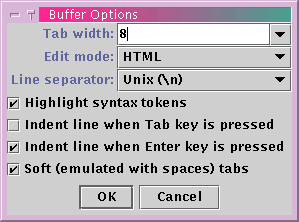

jEdit has many settings and flags that can be changed on a global or per-buffer basis. This chapter deals with the Buffer Options dialog box, the Global Options dialog box, and buffer-local properties.
Utilities>Buffer Options displays the buffer options dialog box where per-buffer settings can be changed. Any changes made in this dialog box are lost when the buffer is closed and reopened.
The "Corresponding buffer-local properties" text field displays the buffer-local properties that would be used to duplicate the current settings in the dialog box. Buffer-local properties can be used to change per-buffer settings for all future editing sessions; see the next section for details.
Figure 9-1. The Buffer Options dialog box
